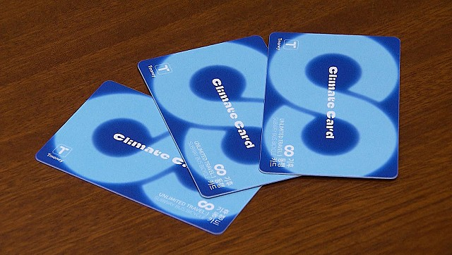
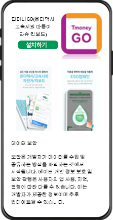
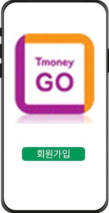
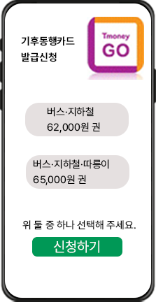
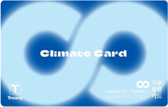

서울시가 준비 중인 무제한 대중교통 이용권, '기후동행카드'
시범사업이 내년 1월 27일 시작됩니다.
요금제도 '따릉이' 이용 여부에 따라서 두 가지로 출시됩니다.

기후동행카드 이용 가이드
(서울지하철,버스) 62,000원 권
(서울지하철,버스,따릉이) 65,000원 권
사용기간 사용 개시일부터 30일간
기후동행카드 이용범위
지하철
일부구간: 1·3·4·5·7호선,
공항철도, 경의중앙선,
경춘선, 수인분당선
전구간: 2·6·8·9호선,
신림선, 우이신설선
제외: 신분당선
버스
제외: 타 시·도 면허버스
심야버스(올빼미·N버스),
광역버스
기후동행카드 신청 방법
모바일 카드

1단계 - 모바일 티머니GO 앱
다운로드 받기

2단계 - 모바일 티머니GO 앱
다운로드 받은 후 회원가입하기

3단계 - 회원가입 후 로그인 다음
기후동행카드 금액 선택 후 신청 누르면
발급완료 안드로이드는 모바일 카드 제공,
iOS(아이폰 실물카드 발급)
실물 카드

환불 - 사용만료일 전 기후동행카드 사용잔액 환불 가능
환불 금액: 카드충전금-대중교통 실사용액-수수료 500원
3,000원 별도 구매, 최초 구매 후
매달 충전 사용
*서울교통공사1~8호선 고객안전실 및 역사 인근 편의점 구매